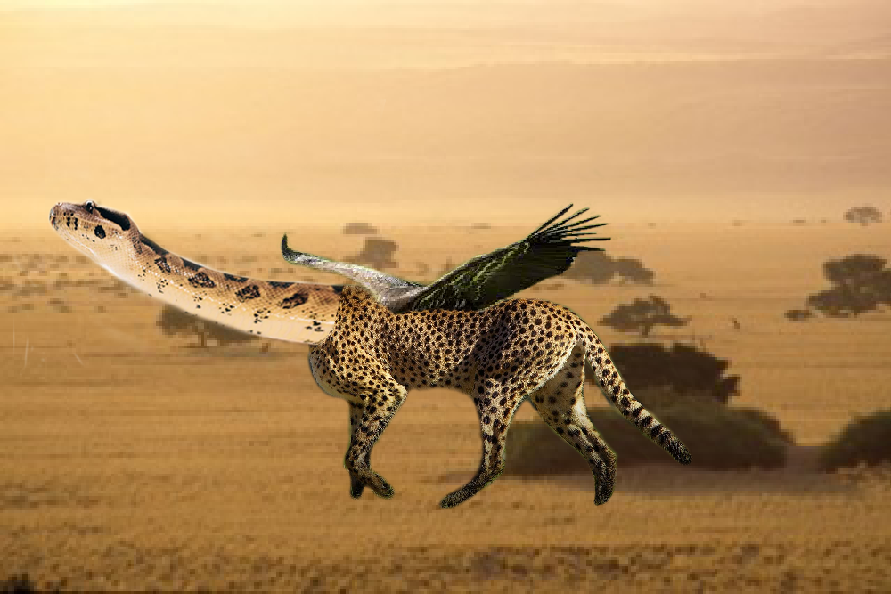

I used the program Adobe Express and was able to create a collage that reflects my aesthetic. I started by gathering images that I felt connected to and felt express myself. I used pictures to show an extraterrestrial feeling because I sometimes feel disconnected with reality. I included pictures to show how I feel about the feeling, I contradict the bright colors with black and white pictures. I think my collage matches my aesthetic because not only the way I dress but my first impression when I first meet people. It shows my head space and how I feel on a day to day basis.
I started by outlining my character design, I used the pencil tool to fill each pixel for the outline of my character and what I wanted for my background. For my character design I went for a fairy in the woods. My characters are wearing a spring green leaf long sleeve and a fall brown leaf pants. She has long brown hair and wears a mushroom for a hat. My character would be in an adventure game and she will help other fairies with tasks. My character will be able to collect items after every task and be able to decorate their tree hut.

I used the image that I changed from pexel, I basically flipped the image and duplicated it. When I did each step the picture changed and merged. Slowly the fall picture turned into a kaleidoscope and the image looked like glass. I loved that the color orange was very prominent and had a nice representation of fall in a cool way.

I used the quick selection tool to separate her face from the background and collected swatches of the colors on her face to use later. I was able to use the swatches to color back in her features that I wanted to show. I colored her eyes, lips, hair, skin color, and jewelry. I then duplicated it and changed the colors. I chose kehlani because she's one of my favorite music artists and wanted to do fan art of her.
I used a snake with a similar pattern as the cheetah so it’ll blend better, then I knew I wanted it to fly so I used brown colored wings. It has a long neck to stretch for its food like a giraffe and I used a cheetah so it's fast and it flys. I wanted my mythical creature to be almost impossible to escape from to make it terrifying. I used the mask tool so I was able to delete the background and used the tools to blend it. I was also able to change the perspective of the wings so it looks like it's attached to his body. Lastly, I was able to place my creature on a background where it would live if it was real, which was the Savanna.